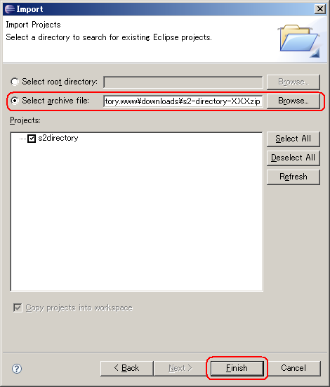
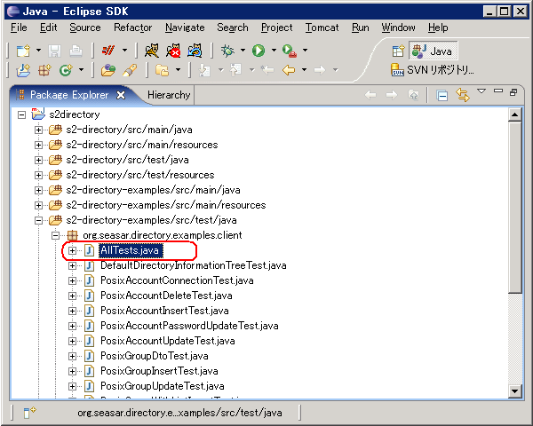

Demonstration
S2Directoryに付属するS2Directoryの機能を一通り実行するExampleをApacheDSで実行する方法を紹介します。ExampleはLDAPv3以降に対応したディレクトリサーバ(JNDI APIで操作できるサーバ)であれば、ApacheDS以外のディレクトリサーバでも稼働します。
Exampleを動かすのに必要なもの
- S2Directory (任意のバージョン)
- S2Container (任意のバージョン)
- ApacheDS 1.0.0 RC3以下
- ApacheDS 1.0.0 RC4およびApacheDS 1.0.0には認証情報のキャッシュにバグがあり正常に動作しません。
本手順でExampleを動かすのに必要なもの
以下は本ドキュメントで説明する手順で実行する場合に必要なものです。
- Eclipse (適当なバージョン)
- Maven2 (適当なバージョン)
- Maven 2.x Plug-in for Eclipse (適当なバージョン)
ApacheDSのインストール
ApacheDSのサイトより1.0.0 RC3以下のパッケージをダウンロードし、インストールします。
表記説明
| 項目 | 説明 | 例 | |
|---|---|---|---|
| $APACHEDS_HOME | ApacheDSのインストール先ディレクトリ | Windows | C:\Software\ApacheDS |
| Unix | /usr/local/java/apacheds | ||
Windowsの場合
インストーラを使用してインストールする場合、インストールの最後にサービスとして起動するか聞かれますが、サービスとして起動しない選択をしてください。
- Runs the configration manager for the apacheds windows services
- チェックを外す
サービスとして起動した場合は、次の設定ファイル変更後、設定を反映するのに該当サービスの再起動もしくはWindowsを再起動をしてください。
ApacheDSの設定
S2Direcotryのパッケージ内に付属されているApacheDSの設定ファイルを$APACHEDS_HOME/conf/server.xmlに上書きします。
設定ファイル説明
| ファイル名 | 説明 |
|---|---|
| s2-directory-examples/src/main/resources/apacheds/server.1.0-RC3.xml | ApacheDS 1.0 RC3用の設定ファイル |
cp -a s2-directory-examples/src/main/resources/apacheds/server.1.0-RC3.xml \ $APACHEDS_HOME/conf/server.xml
ApacheDSの起動
Windowsの場合の起動方法
ApacheDSをインストーラでインストールしている場合、Tray Monitorから起動するのが便利です。
[スタート] -> [プログラム] -> [ApacheDS] -> [Tray Monitor]
起動するとタスクトレイにApacheDSの起動・停止を制御するプログラムのアイコンが表示され、[Start service]を選択するとApacheDSが起動します。
Unixの場合の起動方法
/etc/init.d/apacheds start
Exampleの実行
ここではEclipseにインポートしてデモプログラムを実行する例を紹介します。Eclipse以外でデモプログラムを実行したい場合は、必要なライブラリを揃えて、s2-direcotry-examples/src/test/java/org/seasar/directory/examples/client/AllTestsを実行してください。
S2DirecotryプロジェクトをEclipseにインポート
Eclipseを起動し、S2DirectoryのパッケージをImportします。
[Package Explorerを右クリック] -> [Import] -> [General] -> [Existing Projects into Workspace] -> S2Directoryのアーカイブを選択
実行
s2-direcotry-examples/src/test/java/org/seasar/directory/examples/client/AllTests を選択し、[Run As] の [JUnit Test] を実行するとすべてのExampleが実行されます。
なお、実行する際、対象となるディレクトリのDIT（Directory Information Tree）は初期状態である必要があります。既に何らかのエントリを追加している場合は、一旦すべてのエントリを削除してください。ApacheDSのDITを初期化したい場合は、$APACHEDS_HOME/var/partitions/seasar ディレクトリを削除し、ApacheDSを再起動すると初期化されます。
Exampleの説明
Exampleで実行される各テストを説明します。各ソースプログラムを読んでS2Directoryが出来ることを見てみてください。
| ファイル名 | 説明 | 対象オブジェクトクラス |
|---|---|---|
| AllTests | すべてのExampleを実行する | - |
| PosixAccountConnectionTest | ディレクトリサーバへの接続を実行する | - |
| PosixAccountDeleteTest | ユーザエントリを標準の接続権限、ユーザ権限で削除する | posixAccount |
| PosixAccountInsertTest | ユーザエントリを新規作成、検索する | posixAccount |
| PosixAccountPasswordUpdateTest | ユーザエントリのuserPassowrd属性を標準の接続権限、ユーザ権限で更新する | posixAccount |
| PosixAccountUpdateTest | ユーザエントリのもつ属性を更新、追加する | posixAccount |
| PosixGroupDtoTest | グループエントリをDto（Data Transfer Object）を使用して検索、更新する | posixGroup |
| PosixGroupInsertTest | グループエントリを新規作成、検索する | posixGroup |
| PosixGroupUpdateTest | グループエントリのもつ多重属性を含む属性をString型のEntityで更新する | posixGroup |
| PosixGroupWithListInsertTest | グループエントリのもつ多重属性を含む属性をList型のEntityで更新する | posixGroup |
Digest
S2Directoryには暗号化ハッシュを生成、検証する便利な機能があります。この機能はディレクトリサーバを使わない環境においても、独立して使うことで簡単に暗号化ハッシュを生成、検証することが出来ます。